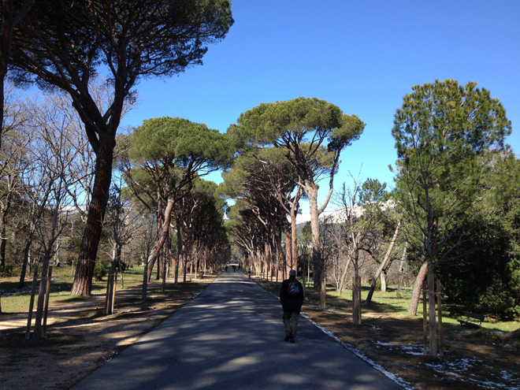
On Sunday, while my pal was at her trade fair, I took a train from Madrid up to El Escorial, the historical residence of the King of Spain, in the town of San Lorenzo de El Escorial, about 28 miles north-west of Madrid. It also functions as a monastery, basilica, royal palace, pantheon, library, museum, university, school and hospital.
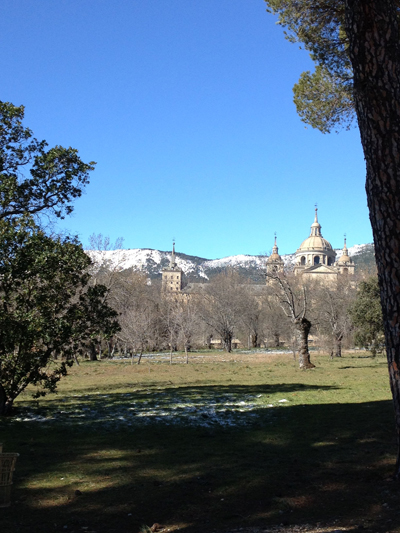
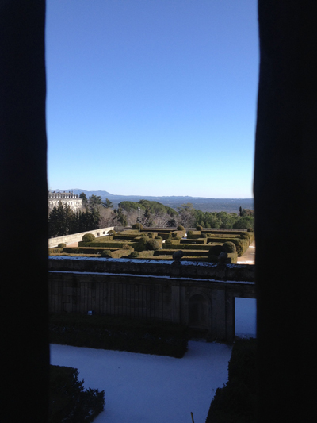
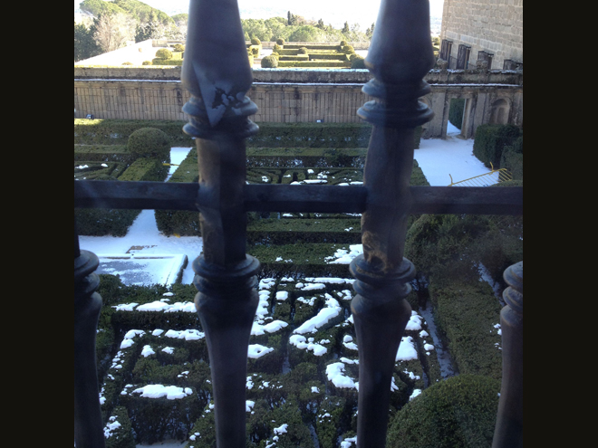
Philip II of Spain (who reigned 1556–1598) engaged the Spanish architect Juan Bautista de Toledo to be his collaborator in the building of the complex at El Escorial. Toledo had spent the greater part of his career in Rome, where he had worked on St. Peter's Basilica, and in Naples, where he had served the king's viceroy, whose recommendation brought him to the king's attention. Philip appointed him architect-royal in 1559, and together they designed El Escorial as a monument to Spain's role as a centre of the Christian world.
However, Toledo did not live to see the completion of the project. With his death in 1567, direction passed to his apprentice, Juan de Herrera, under whom the building was completed in 1584, in just under 21 years. To this day, la obra de El Escorial ("the work of El Escorial") is a proverbial expression for a thing that takes a long time to finish.
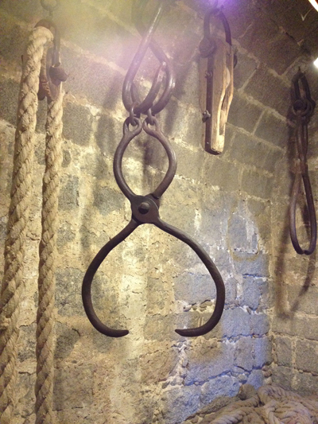
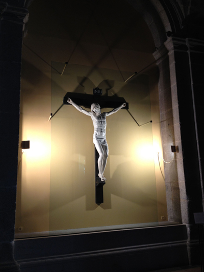
The floor plan of the building is in the form of a grid-iron. The traditional belief is that this design was chosen in honour of St. Lawrence, who, in the third century AD, was martyred by being roasted to death on a grill. St. Lawrence’s feast day is 10 August, the same date as the 1557 Battle of St. Quentin.
However, a more persuasive theory for the origin of the floor plan is that it is based on descriptions of the Temple of Solomon by the Judeo-Roman historian, Flavius Josephus: a portico followed by a courtyard open to the sky, followed by a second portico and a second courtyard leading to the "holy of holies". Statues of David and Solomon on either side of the entrance to the basilica of El Escorial lend further weight to the theory that this is the true origin of the design.
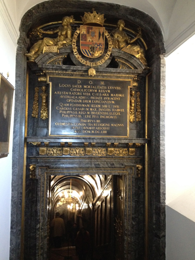
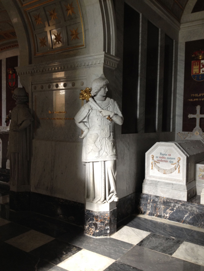
El Escorial has been the burial site for most of the Spanish kings of the last five centuries, Bourbons as well as Habsburgs. The Royal Pantheon contains the tombs of the Holy Roman Emperor Charles V (who ruled Spain as King Charles I), Philip II, Philip III, Philip IV, Charles II, Louis I, Charles III, Charles IV, Ferdinand VII, Isabella II, Alfonso XII, and Alfonso XIII.
However, two Bourbon kings, Philip V (who reigned from 1700 to 1724) and Ferdinand VI (1746–1759), as well as King Amadeus (1870–1873), are not buried in the monastery.
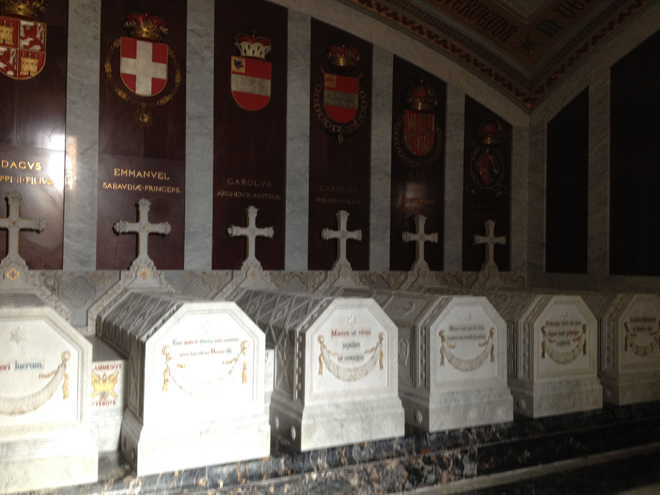
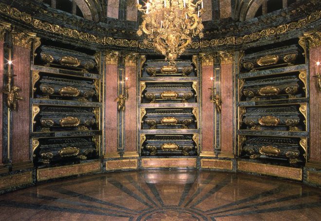
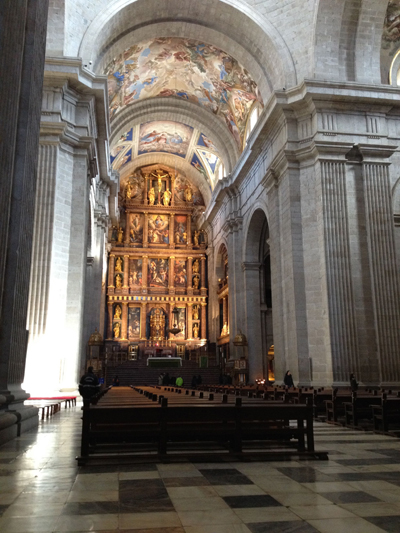
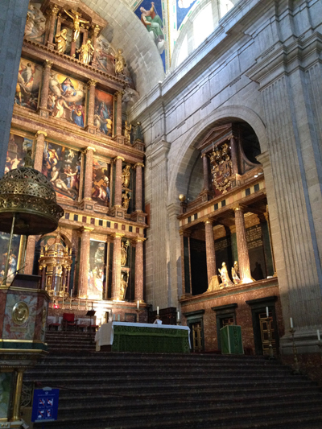
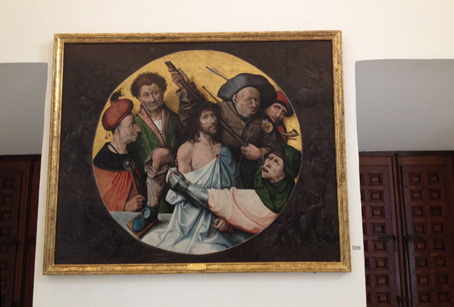
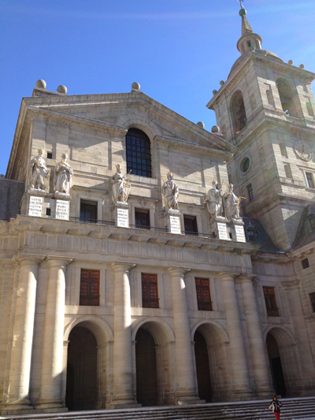
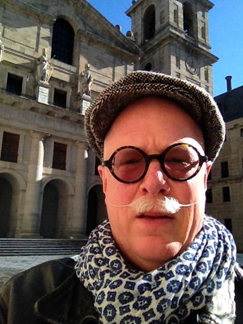
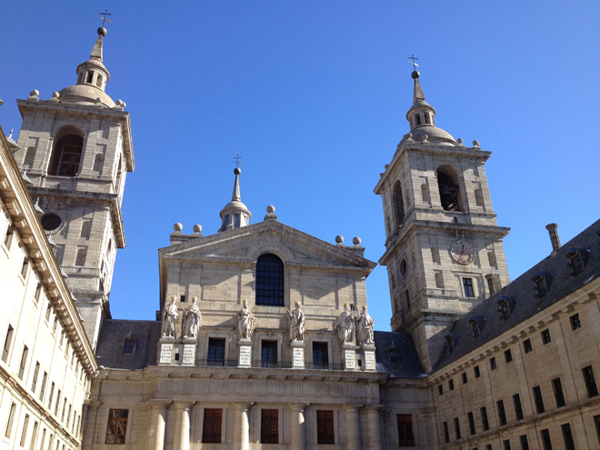
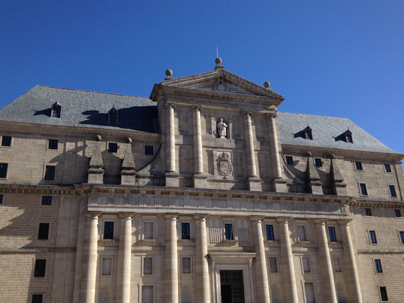
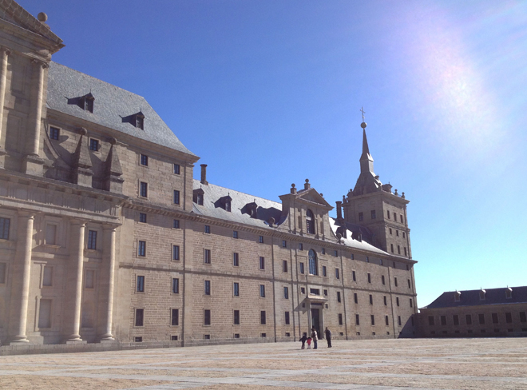
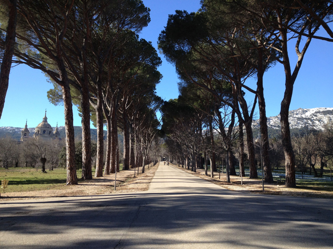
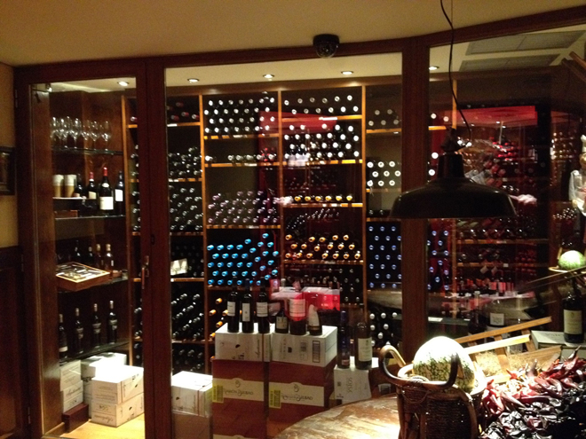
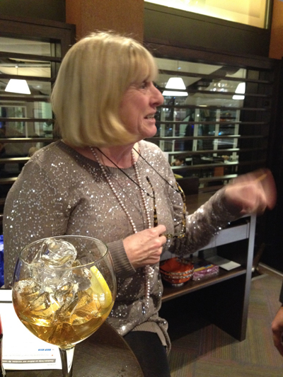
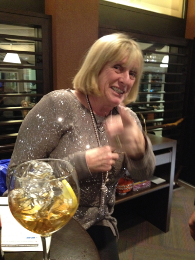
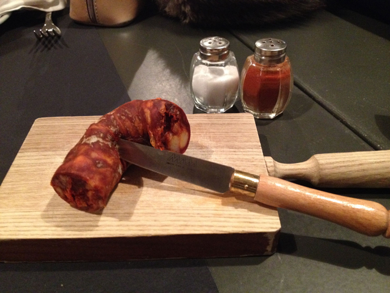
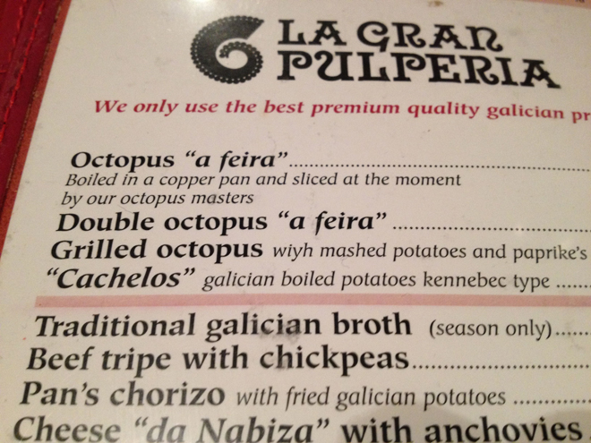
We had a chorizo starter (it just came as a giant slab of sausage) and the octopus "a feira - sliced at the moment". Again, it was huge - but delicious - and needed lashings of rioja to wash it down.
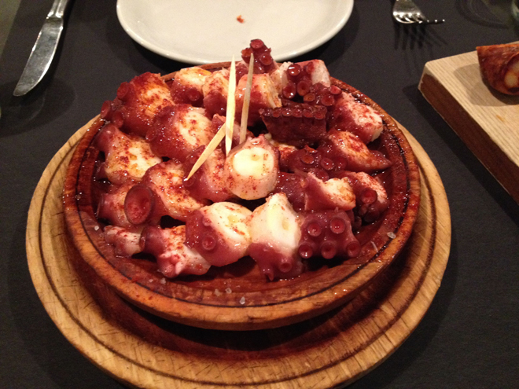
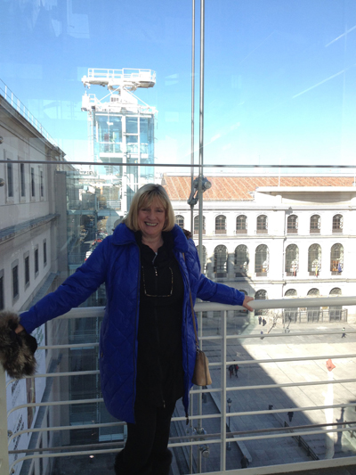
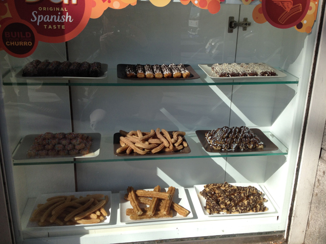
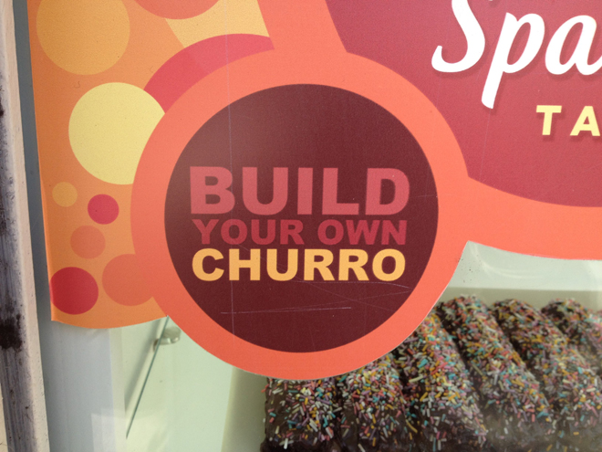